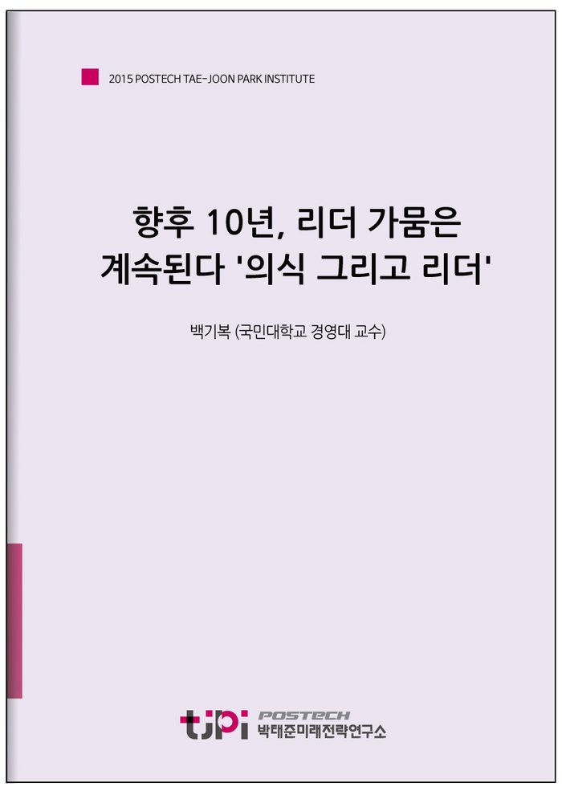

저자 백기복 (국민대학교 경영대 교수)보도일 2015-10-19

요 약
리더는 방향을 설정하고 자원을 분배하며 많은 사람들에게 행동의 지표가 되는 나라의 소중한 자산이다. 하지만 리더가 나라를 엉뚱한 방향으로 이끌어가거나 자원배분의 우선순위를 잘못 설정하든가 그의 행동이 국민들에게 부끄러움을 주면 자산이 아니라 부채가 된다. 자산은 국민들에게 혜택을 주지만 부채는 국민이 갚아야 하는 부담이다.
한국의 리더십부재는 왜 지속되는 것이며, 또 어떻게 하면 [0.1 x 10%의원칙]을 극복할 수 있을까? 우선 문제의 원인들을 정리해보자.
첫째는 한국의 리더들이 성장과정에서 방향설정, 자원의 합리적 분배, 모델행동 등 리더십 기술을 제대로 교육받지 못했기 때문이다.
둘째는, 한국의 리더들은 학교를 졸업하고 난 후에도 제대로 된 리더십훈련을 받지 않는다. 훈련된 리더의 행동은 정교해진다.
셋째로 다른 나라 리더들에 비해 한국의 리더들은 ‘주도적 기획능력’이 크게 결여되어 있다. 사고의 폭은 인식의 넓이를 결정하고 인식지평은 주도적 기획능력에 결정적 영향을 미친다.
넷째는 상황이 요구하는 리더십과 리더들의 자질 간에 괴리가 매우 심각하다는 점이다.
한국에서 성공하는 리더는 한국생태계에 적합한 리더들이다. 그러므로 탁월한 리더를 갖고 싶으면 그들이 생존할 수 있는 생태계를 만들어줘야 한다. 이것은 리더를 평가하고 인정하고 지원해주는 가치문화의 혁신을 필요로 한다. 정치적 보복이 없는 문화, 참을 참이라고 말할 수 있는 분위기, 외집단(out-group)의 인재에게도 과감히 손을 내미는 관용, 파를 불문하고 리더를 국가의 자산으로 여기는 공유가치의 정립이 리더 우호적 생태계를 만든다.
----------------------------------------------------------------
박태준미래전략연구소는 2015년 미래전략 연구 대상으로 선정한 ‘10년 내 한국사회가 당면할 가장 중요한 이슈는 무엇이며, 어떻게 대응해야 하는가?’라는 주제에 대해 다양한 분야에서 업적을 이룬 전문 지식인들의 생각을 들어보았습니다.
< 전문가 36인의 에세이를 엮어 '10년 후 한국사회'라는 책으로 발간되었습니다. 도서보기 >
목 차
백기복
국민대학교 경영대 교수
미국 the University of Houston 경영학 박사. 미국 James Madison University 교수, 한국인사조직학회 회장, 대한리더십학회 회장, 한국윤리경영학회 회장 역임, 현재 국민대학교 경영대학 교수, KMU생활협동조합 이사장. 저서 『미래형리더의 조건』 『대왕세종』 『성취형리더의 7가지 행동법칙』 『리더십의 이해』 『리더십리뷰』 『조직행동연구』 『새로운 경영학』 등.
내 용
[2015 전문가 에세이] 향후 10년, 리더 가뭄은 계속된다 '의식 그리고 리더'
백기복 (국민대학교 경영대 교수)